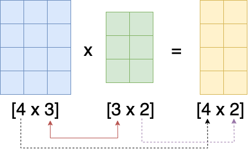
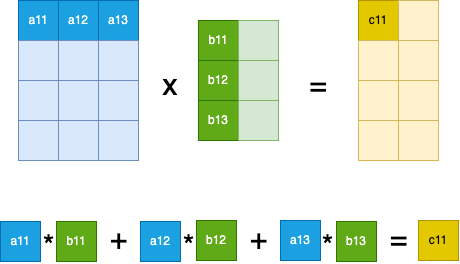
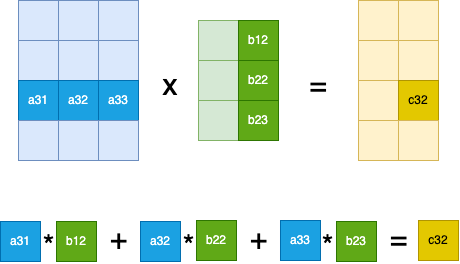

import torch
a = torch.randn(4,3)
b = torch.randn(3,2)Matrix multiplications are kind of boring, so why write a blog post about them? Well, matrix multiplications are the most basic computation that is being performed by neural networks. So it’s probably good to be familiar with them (although we never do them by hand). Also, we are going to focus on speeding them up by doing vectorization. Vectorization is something we often have to do, to make sure everything runs as quickly as possible, and it’s thus a good exercise to understand how to achieve this. Especially since it involves being very familiar with matrices, their shapes, broadcasting operations and the like.
This post follows the first lecture of Part 2 of the FastAI course (2019), I will provide some additional explanations, and present one other optimization that is not presented in the lecture.
Definition
Matrix multiplication is not difficult, it basically goes like this:
- For matrix A of size
[ar x ac]([4 x 3]in the image below) - and matrix B of size
[br x bc]([3 x 2]in the image below) - the matrix product
A * Bis of size[ar x bc]([4 x 2]in the image below). - So the matrix product is thus only defined when
ac == br(3 == 3in the image below)

So for any valid matrix multiplication, we have three dimensions that need to considered:
ar: the row dimension of matrix A. The size of this dimension will become the size of the row dimension of the output matrix (black arrow in the image above)bc: the column dimension of matrix B. The size of this dimension will become the size of the column dimension of the output matrix (purple arrow in the image above)ac: the column dimension of Matrix A andbr: the row dimension of matrix B: they need to be equal (red arrow in the image above)
Why do ac and bc need to be equal? Well, because we take the inner product over this dimension when computing the cell values of the new matrix, and inner-products are only defined for vectors of equal length. Below, I will also refer to this dimension as the dimension over which we collapse (or the “collapsible” dimension), since in the output matrix, this dimension is no longer present.

In other words, to compute cell \(C_{i,j}\) we take the inner product between row i of matrix A and column j of matrix B. Let’s have a look at one other cell, to make sure we understand fully what’s going on. In the next figure we compute the value for cell \(C_{3,2}\), we thus take the inner-product between row 3 of matrix A and column 2 of matrix B:

Let’s do this in code and confirm what we have established above about the shapes of the matrices:
# Confirm the shape of the output matrix
(a@b).shapetorch.Size([4, 2])# Confirm the value of one output cell (C00)
C00_manual = (a[0,0] * b[0,0]) + (a[0,1] * b[1,0]) + (a[0,2] * b[2,0])
C00_auto = (a@b)[0,0]
assert torch.allclose(C00_manual, C00_auto)With what we know, let’s create our own matmul function:
def matmul(a, b):
# fill in the sizes of the dimensions
ar, ac = a.shape
br, bc = b.shape
# assert that our matrices can be multiplied
assert ac == br
# create an output tensor of the expected size (ar x bc)
out = torch.zeros(ar, bc)
# iterate over the rows of the output matrix (--> length ar)
for i in range(out.shape[0]):
# iterate over the columns of the output matrix (--> length bc)
for j in range(out.shape[1]):
# iterate over the "collapsed" dimension (--> length ac and length br),
for k in range(ac):
out[i, j] += a[i, k] * b[k, j]
return out
# Confirm that the result is correct
assert torch.allclose(matmul(a,b), a@b)Although this is functionally correct, it’s not very efficient. In fact, to compute the value of one cell of the output matrix, we are doing three separate multiplications. In other words, for each cell out[i,j] we are calling three times (once for every value of k):
out[i, j] += a[i, k] * b[k, j]Let’s try to reduce the computation of one cell to just one single call.
First improvement
To do so, we need to get rid of the loop over the “collapsible” dimension k. We can simply do this by replacing the k with a :, so that we select the whole dimension instead of just one element in that dimension. The multiplication (*) is doing an element wise multiplication, so we have to wrap the result with a .sum().
def matmul2(a, b):
ar, ac = a.shape
br, bc = b.shape
assert ac == br
out = torch.zeros(ar,bc)
# iterate over the rows of the output matrix (i)
for i in range(out.shape[0]):
# iterate over the columns of the output matrix (j)
for j in range(out.shape[1]):
out[i, j] = (a[i, :] * b[:, j]).sum()
return out
# Confirm that the result is correct
assert torch.allclose(matmul(a,b), a@b)Second improvement
The improvement above, gives us the value of a cell in one single call:
out[i, j] = (a[i, :] * b[:, j]).sum()This is great, let’s try to vectorize this even further, and get rid of the second loop (the loop over j), this means that we need to compute the values of a single row of the output matrix in one call, e.g.
out[i,:] = ...We know that the value of cell \(C_{ij}\) is the inner product between row i of A and column j of B. We also know that any row of matrix C will have two values. Let’s compute them manually:
out_00 = (a[0,:] * b[:,0]).sum()
out_01 = (a[0,:] * b[:,1]).sum()
C0_manual = torch.stack([out_00, out_01])
C0_auto = (a@b)[0]
assert torch.allclose(C0_manual, C0_auto)
print(f'{out_00=}', f'{out_01=}', f'{C0_manual=}', sep='\n')out_00=tensor(-0.0213)
out_01=tensor(0.3668)
C0_manual=tensor([-0.0213, 0.3668])Observe that for the computation of one row of output, we need:
- one single row of A (
a[0,:]) - the full matrix of B, we need both the first (
b[:,0]) column and the second column (b[:,1]).
Let’s check the sizes of both and see whether we can use broadcasting:
print(f'{a[0,:].shape=}', f'{b.shape=}', sep='\n')a[0,:].shape=torch.Size([3])
b.shape=torch.Size([3, 2])Unfortunately, size [3] and [3,2] don’t broadcast. To make them broadcast, we have to add an empty dimension at the end of the row of the A matrix. Then, the shapes [3, 1] and [3, 2] can be broadcasted to another by duplicating the former in the column direction:
t = a[0,:].unsqueeze(-1) # [3, 1]
t.broadcast_to(b.shape) # [3, 2]tensor([[ 0.9193, 0.9193],
[-0.0426, -0.0426],
[ 1.3566, 1.3566]])Now that both object are the same size we can do an element-wise multiplication and then sum over the rows to arrive at an output of size [1,2]:
C0_manual = (t*b).sum(dim=0)
C0_auto = (a@b)[0,:]
assert torch.allclose(C0_manual, C0_auto)
print(f'{C0_manual=}', f'{C0_manual.shape=}', sep='\n')C0_manual=tensor([-0.0213, 0.3668])
C0_manual.shape=torch.Size([2])So let’s implement this:
def matmul3(a, b):
ar, ac = a.shape
br, bc = b.shape
assert ac == br
out = torch.zeros(ar,bc)
# iterate over the rows of the output matrix (i)
for i in range(out.shape[0]):
out[i, :] = (a[i, :].unsqueeze(-1) * b).sum(dim=0)
return out
# Confirm that the result is correct
assert torch.allclose(matmul(a,b), a@b)Third improvement
For the final improvement, we need to get rid of the only remaining loop over the rows of our output matrix (i). So let’s understand very well what we are having at the moment:
- We are iterating over the (4) rows of our output matrix
- For each row, we are computing the (2) values of our row at once by doing
out[i, :] = (a[i, :].unsqueeze(-1) * b).sum(dim=0)and let’s break this down once again in steps:a[i, :]has shape[3]and represents one row of A- with
a[i, :].unsqueeze(-1)we add an extra dimension so that we can broadcast, the result has shape[3, 1] bhas shape[3, 2]and is the full B matrix- element-wise multiplication of 2. and 3. gives a matrix of shape
[3, 2] - by summing over the rows (
.sum(dim=0)) we arrive at the result of shape[2]
We want to improve this by instead of iterating over the 4 rows, do these computations all at once for all rows. So let’s start by not selecting one row of A (a[i,:]) but instead just the whole a matrix:
ahas shape[4, 3]- similarly to what we did before, we can
a.unsqueeze(-1)to add an extra dimension, the result has shape[4, 3, 1] - same as before,
bhas shape[3, 2]and is the full B matrix - broadcasting of 2. and 3. will do the following:
a.unsqueeze(-1)has shape[4, 3, 1]and get’s expanded to[4, 3, 2]to match the shape ofb([3, 2])- but
balso needs to matcha, first an additional empty dimension is added in the front:[1, 3, 2]and then it get’s expanded to[4, 3, 2] - next, the element-wise multiplication of 2. and 3. gives a matrix (tensor) of shape
[4, 3, 2], let’s call itt. It’s import to realize what thistrepresents. For that, notice that the first dimension (length 4) and last dimension (length 2) are the dimensions of our output matrix ([4, 2]). The middle dimension (length 3) represents the element wise multiplications of any row in matrix A and any column of matrix B. So by doing for examplet[i, :, j].sum()we get the value for cell \(C_{i,j}\) of our output matrix!
- This means, that to arrive at the final result, we will have to collapse (sum) over the middle dimension!
def matmul4(a, b):
return (a.unsqueeze(-1) * b).sum(dim=1)
# Confirm that the result is correct
assert torch.allclose(matmul(a,b), a@b)Timings
To see what kind of a speed-up we have achieved, let’s look at the timings of our first version with three loops and the timings of our optimized version:
%timeit -n 1000 matmul(a,b)318 µs ± 13.7 µs per loop (mean ± std. dev. of 7 runs, 1,000 loops each)%timeit -n 1000 matmul4(a,b)10.7 µs ± 1.46 µs per loop (mean ± std. dev. of 7 runs, 1,000 loops each)Nice, our optimized version is about 30 times faster then our un-optimized version with 3 loops! Additionally, let’s check the timings of doing the matrix multiplication with einsum:
%timeit -n 1000 torch.einsum('ij,jk->ik', a, b)25.9 µs ± 3.78 µs per loop (mean ± std. dev. of 7 runs, 1,000 loops each)Surprisingly, our optimized version is twice as fast as einsum. This is certainly something I didn’t expect.
Finally, let’s also check the timings of using the @ operator:
%timeit -n 1000 a@b3.29 µs ± 522 ns per loop (mean ± std. dev. of 7 runs, 1,000 loops each)As expected, this is even faster then our optimized version, probably because it runs in optimized C / CUDA code